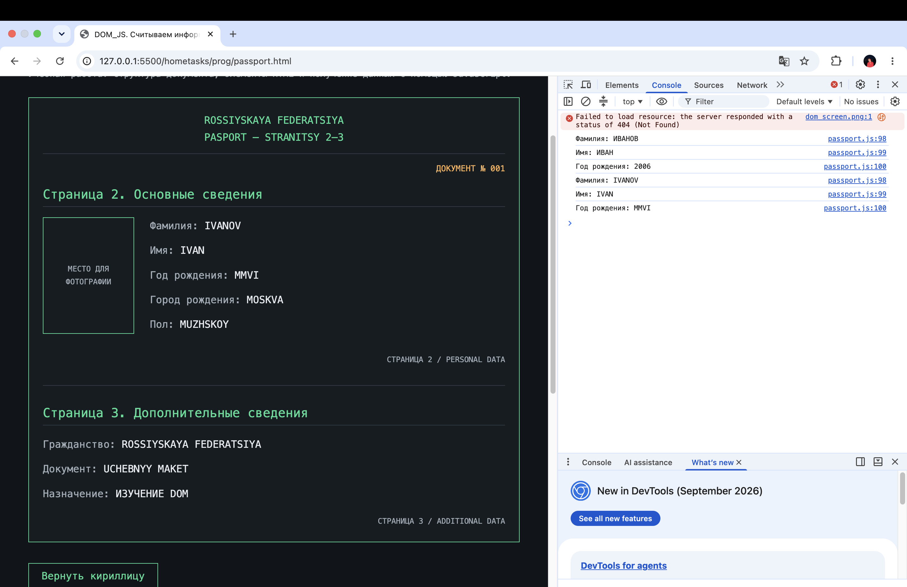

Главная Основы Таблицы Анкета и заказ Паспорт Задача Википедия | Git
Учебная работа: структура документа, элементы HTML и получение данных с помощью JavaScript.
ДОКУМЕНТ № 001
Фамилия: ИВАНОВ
Имя: ИВАН
Год рождения: 2006
Город рождения: МОСКВА
Пол: МУЖСКОЙ
Гражданство: РОССИЙСКАЯ ФЕДЕРАЦИЯ
Документ: УЧЕБНЫЙ МАКЕТ
Назначение: ИЗУЧЕНИЕ DOM
Кнопка «Показать латиницей» переводит данные паспорта в латиницу, год рождения — в римские цифры.
Кнопка «Считать данные» берёт из абзацев p (второй, третий и четвёртый на странице) фамилию, имя и год рождения.
Результат появится после нажатия кнопки.
